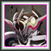

Player profile
starking01
Rank #16server.eurobattle.netSeason 2
Most played · 仮面ライダーエボルブラックホールフォーム
Matches31 wins · 2 losses
Win rate33%
Avg K / D / A28.3 / 37.7 / 8.3
Avg APM141
Avg damage dealt185.4k
Avg damage taken144.3k
Heroes played
Explore heroes →| HERO | MATCHES | WIN RATE | AVG K / D / A | AVG DMG |
|---|---|---|---|---|
仮面ライダーエボルブラックホールフォームMost played | 1 | 100% | 40.0 / 33.0 / 10.0 | 206.3k |
Satsujinki | 1 | 0% | 15.0 / 41.0 / 3.0 | 129.8k |
ミサカ ミコト | 1 | 0% | 30.0 / 39.0 / 12.0 | 220.1k |
Averages use recorded statistics only; unavailable historical values are shown as —.
Recent matches
Open a match for its scoreboard and kill matchups.